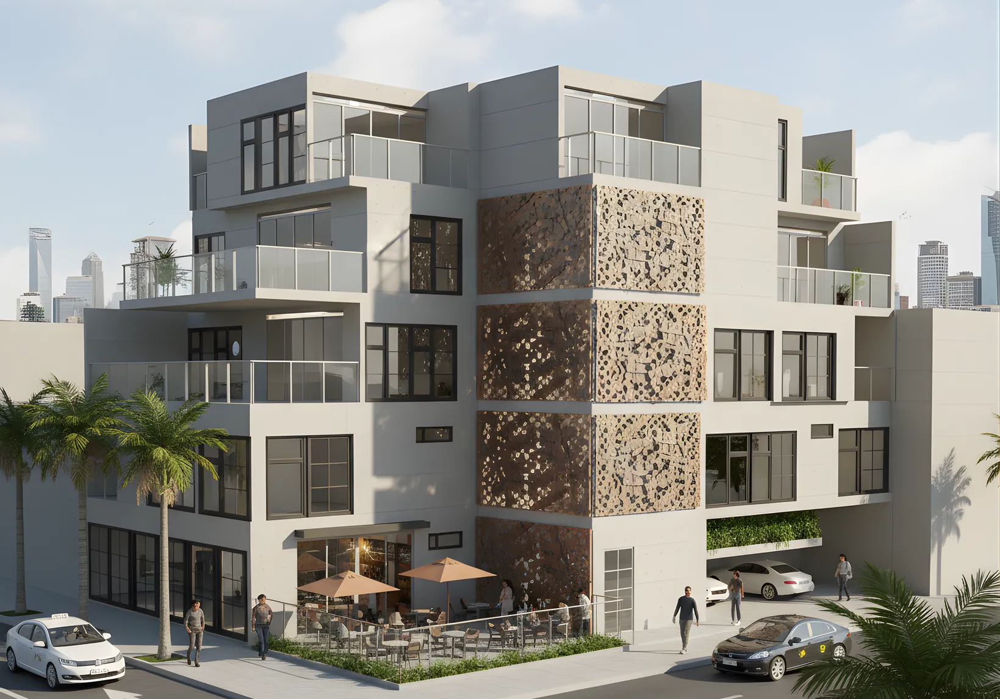
Taller 4 · UPN · Vivienda
Vivienda multifamiliar en Comas
En Comas las casas crecen piso por piso, casi siempre sin planos. Este edificio plantea ese crecimiento desde el inicio: cinco pisos para una familia de tres generaciones, con una cafetería en el primer piso.
- Lugar
- Comas, Lima · lote en esquina
- Terreno
- 300 m² (15 × 20 m)
- Programa
- 7 viviendas y una cafetería
- Área techada
- 834 m² en 5 pisos y azotea
- Curso
- Taller 4 · UPN
Concepto
Vivienda progresiva, pero planificada
En Comas es común construir un piso más cada vez que la familia crece, casi siempre sin asesoría técnica.
Aquí cada piso responde a una etapa de la familia, con acceso propio desde la escalera común, y el primer piso incluye un local comercial que genera ingresos.
- 1er piso: flat de 2 habitaciones, cafetería con terraza y cochera.
- 2do y 3er piso: planta típica con dos flats de 2 habitaciones (T1 y T2).
- 4to y 5to piso: dos dúplex de 3 habitaciones con terraza.
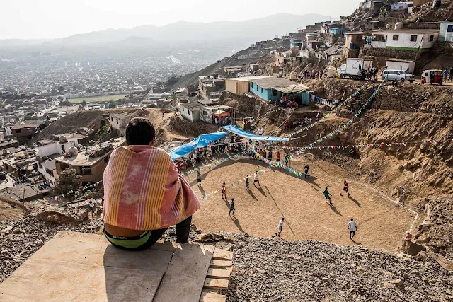
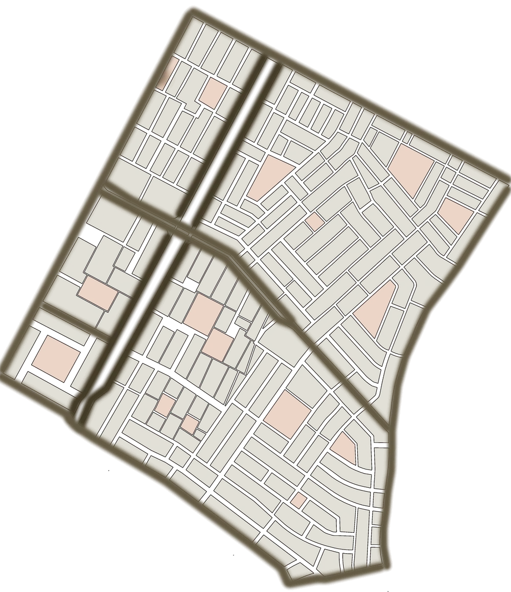
TerrenoUn lote de esquina en Comas
El terreno mide 15 × 20 m (300 m²) y da a una avenida principal y a una secundaria. Las casas vecinas tienen de 2 a 5 pisos y fueron creciendo por etapas, como casi todo el barrio.
Renders · la misma cámara a dos horas
De día y de noche
Arrastra la línea para pasar del día a la noche. Adentro, madera clara, tonos cálidos y luz natural.
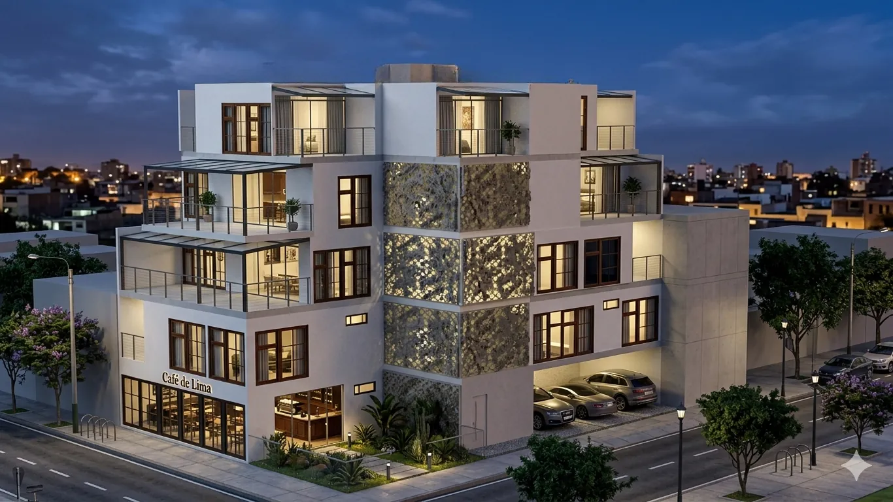
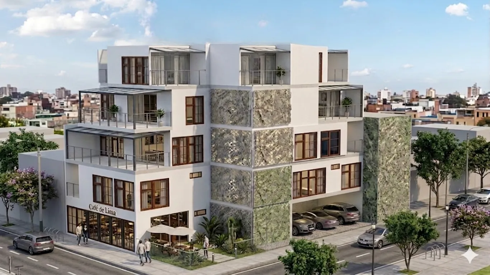
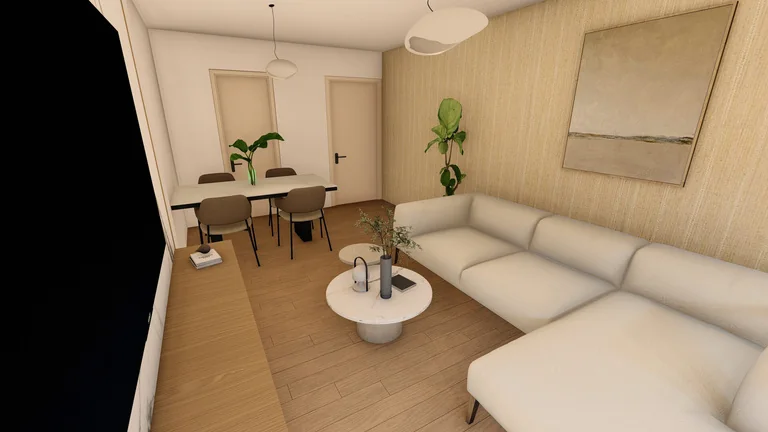
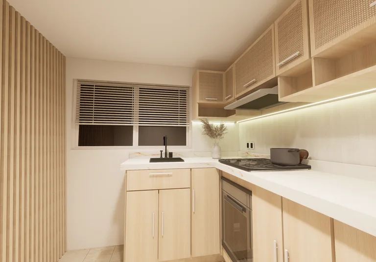
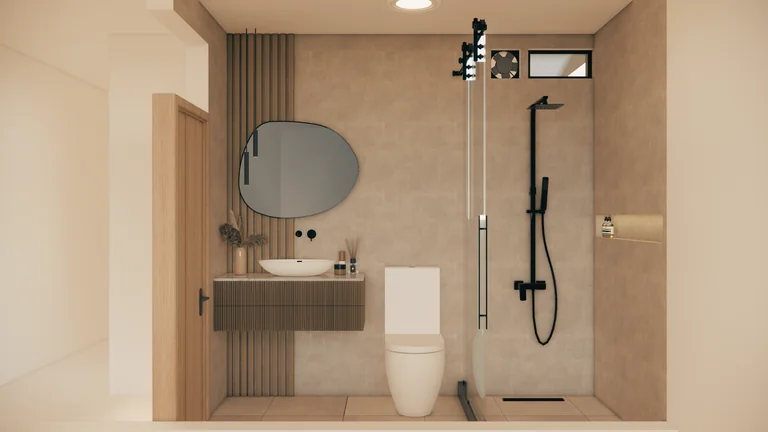
Planos
Plantas, elevación y corte
Las láminas completas, con ejes y cotas. El 3er piso repite la planta típica del 2do.
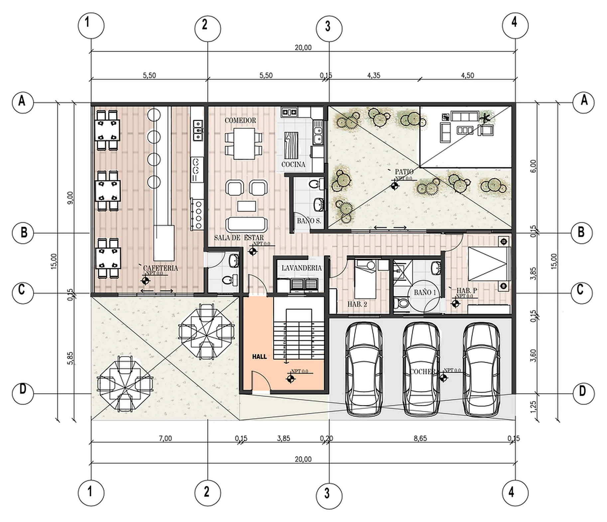
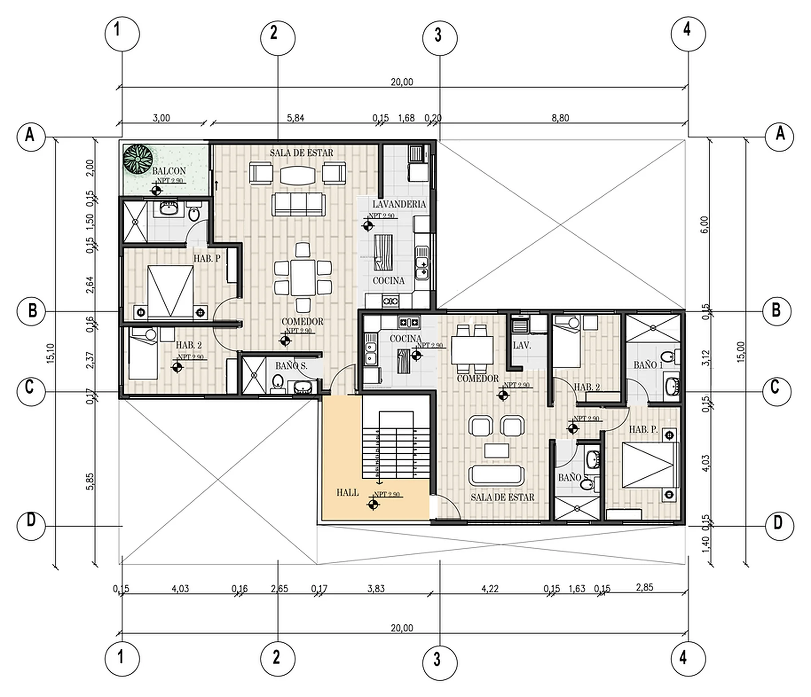
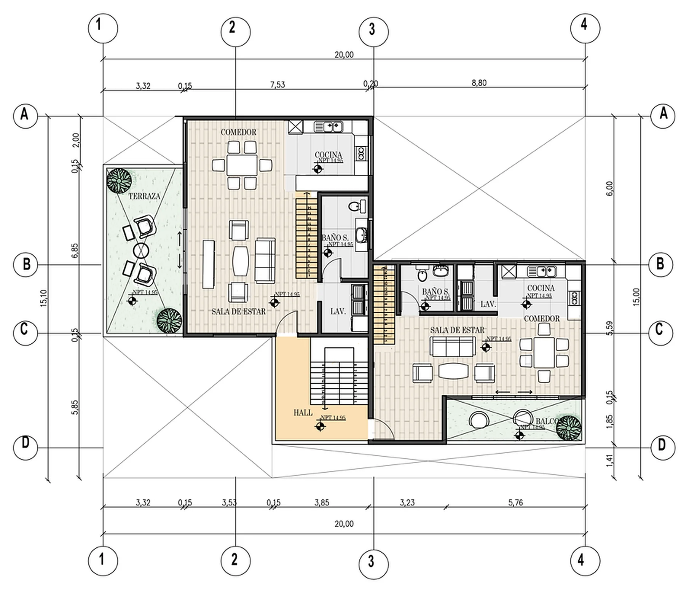
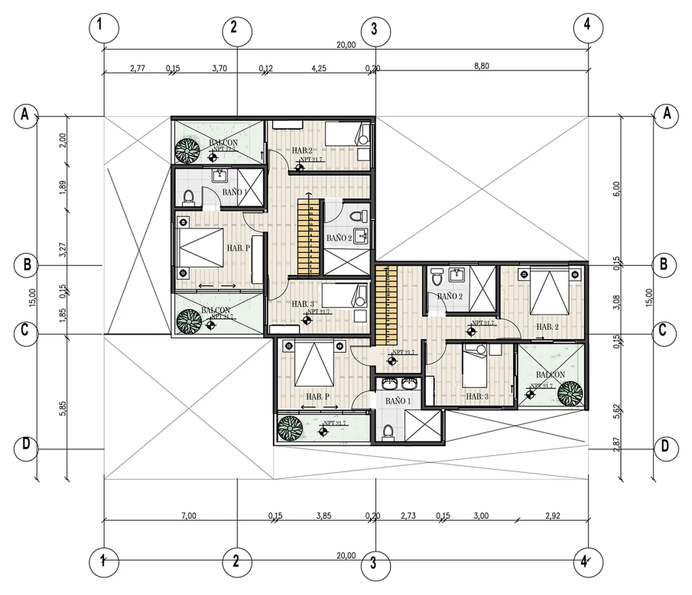
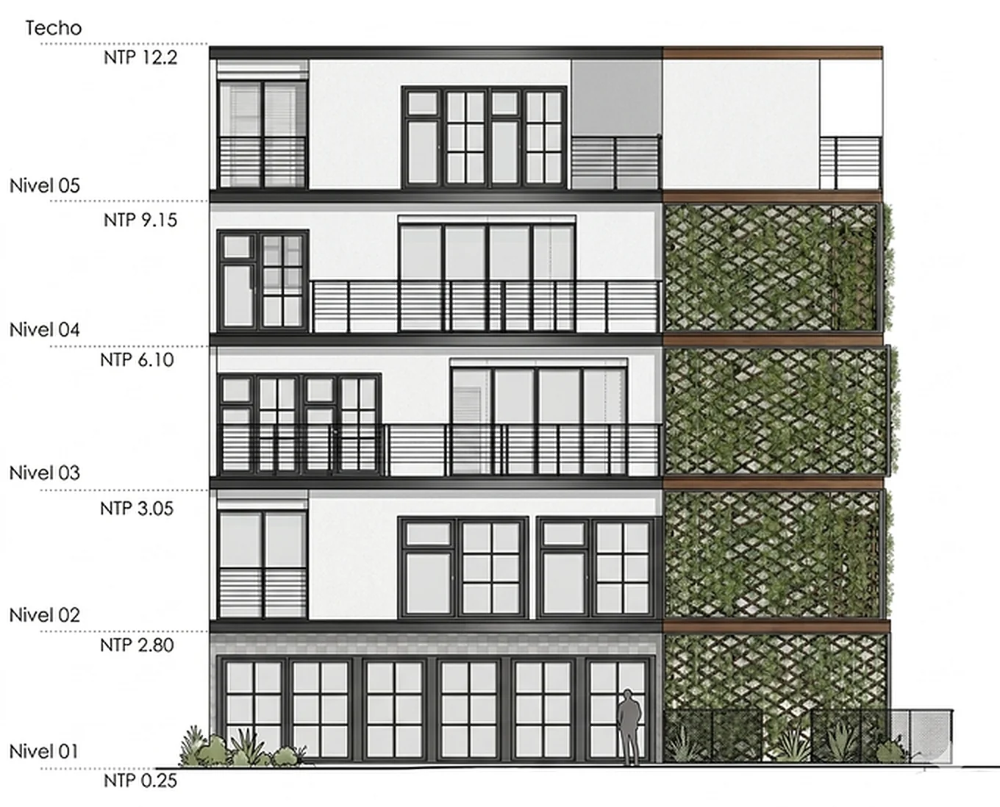
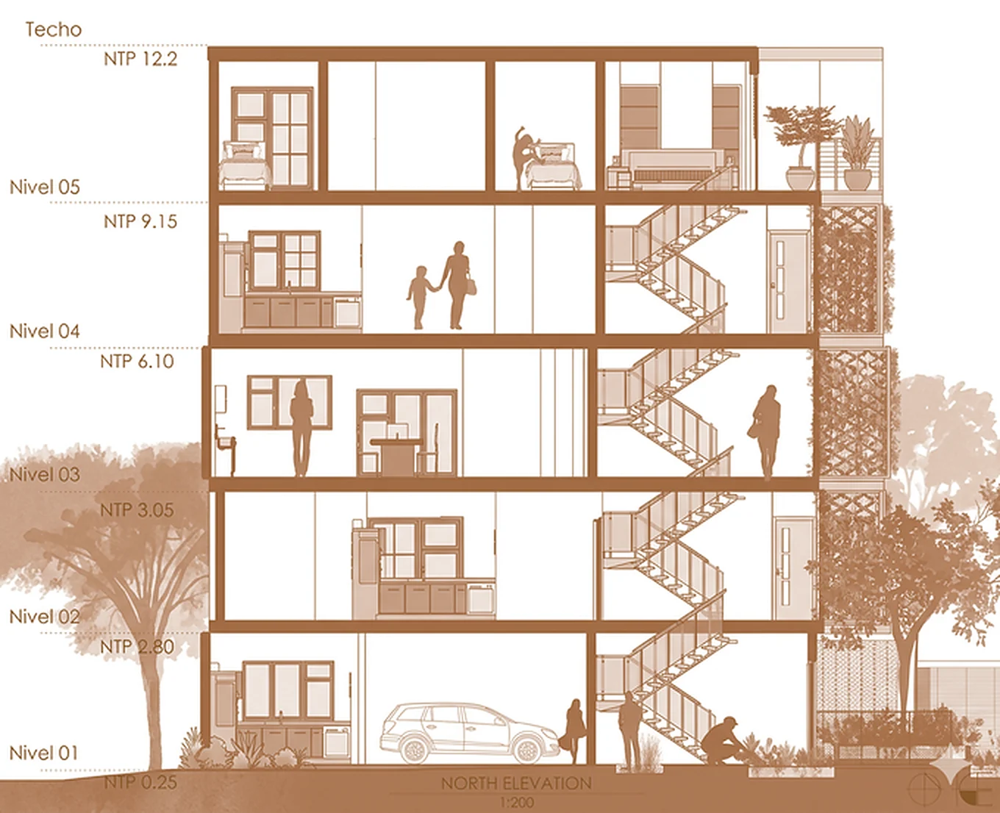
Modelo 3D
El edificio en 3D
Modelado con las cotas de las láminas: 148 muros, 107 puertas y ventanas, losas, la escalera común y 24 columnas de confinamiento. En «Tipologías» cada vivienda tiene su color.
Piso visible
Arrastra para girar · haz clic en el modelo y usa la rueda para acercar · en Planta, el corte a 1.20 m muestra muros y columnas
Ver el cuadro de áreas por tipología
| Tipología | Pisos | Área bruta m² |
|---|---|---|
| Comercio (cafetería) | 1 | 49.59 |
| Flat 2 hab. + comercio | 1 | 83.47 |
| Flat 2 hab. T1 | 2 y 3 | 188.06 |
| Flat 2 hab. T2 | 2 y 3 | 147.98 |
| Dúplex 3 hab. T1 | 4 y 5 | 169.64 |
| Dúplex 3 hab. T2 | 4 y 5 | 141.70 |
| Circulación común | 1 a 4 | 72.60 |
| Total (incluye terrazas y balcones) | 853.04 |
Columnas de 25 × 25 cm en los encuentros de muros portantes, continuas del primer al quinto piso y a no más de 5.80 m entre sí. Altura de entrepiso: 2.90 m.